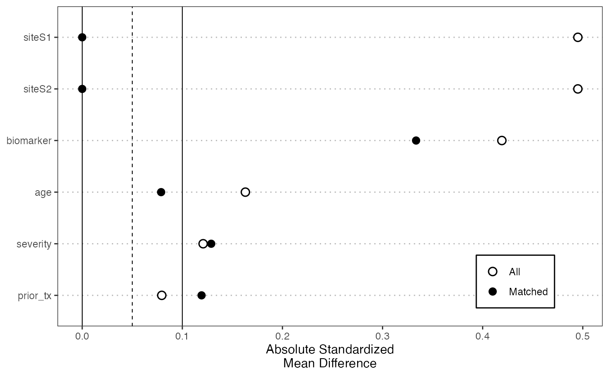

Computes pairwise absolute standardized mean differences (SMDs) before and
after nearest-neighbor matching, then returns a Love-plot style balance plot.
Matching can be performed on existing loggps_* columns, on a
full-sample diagnostic GPS fit, or directly on covariates.
Usage
balance_check_plot(
data,
treatment,
covariate,
treatment_ref = NULL,
match_on = c("gps", "covariates"),
gps_model = c("logit", "gbm", "gam", "xgboost", "ranger"),
gps_params = NULL,
fit_gps = TRUE,
cov_distance = c("mahalanobis", "euclidean"),
standardize = FALSE,
ridge = 1e-08,
match_ratio = 1L,
threshold = 0.1,
style = c("love", "faceted"),
return_data = FALSE
)Arguments
- data
Data frame containing treatment and covariates.
- treatment
Single numeric column index for treatment.
- covariate
Numeric vector of covariate column indices to check.
- treatment_ref
Optional reference treatment level. If
NULL, the last observed treatment level is used when a GPS fit is needed.- match_on
Matching scale:
"gps"or"covariates".- gps_model
GPS model used when
match_on = "gps"andfit_gps = TRUE; one of"logit","gbm","gam","xgboost", or"ranger". Flexible learners require optional packages; XGBoost and ranger are experimental.- gps_params
Optional named list of model-specific GPS parameters.
- fit_gps
Logical. If
TRUEandmatch_on = "gps", fit a full-sample diagnostic GPS model before computing balance. IfFALSE,datamust already contain finiteloggps_*columns.- cov_distance
For covariate matching:
"mahalanobis"or"euclidean".- standardize
If
TRUE, center and scale covariate matching features before matching.- ridge
Small ridge used for Mahalanobis whitening.
- match_ratio
Integer >= 1; number of nearest neighbors per target arm.
- threshold
Reference line for acceptable absolute SMD.
- style
Plot style.
"love"aggregates across pairwise treatment contrasts by taking the maximum absolute SMD for each covariate and sample;"faceted"shows each pairwise treatment contrast separately.- return_data
If
TRUE, return a list withplotandbalance; otherwise return only the plot.
Examples
set.seed(1)
n <- 75
z1 <- rnorm(n)
z2 <- runif(n, -1, 1)
dat <- data.frame(
trt = factor(rep(c("A", "B", "C"), each = 25)),
age = 50 + 10 * z1,
biomarker = z2,
severity = 0.5 * z1 - 0.3 * z2 + rnorm(n, sd = 0.7),
prior_tx = rbinom(n, 1, plogis(0.4 * z1)),
site = factor(sample(c("S1", "S2"), n, replace = TRUE))
)
p <- balance_check_plot(
data = dat,
treatment = 1,
covariate = 2:6,
match_on = "covariates",
style = "love"
)
p
